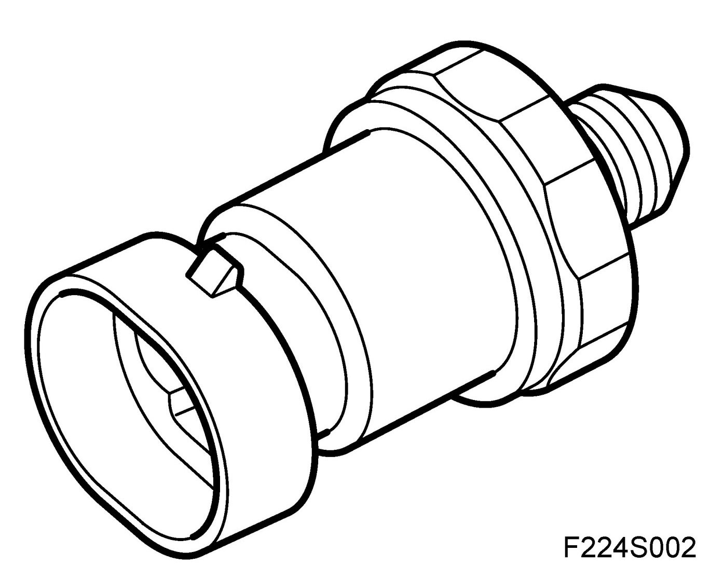
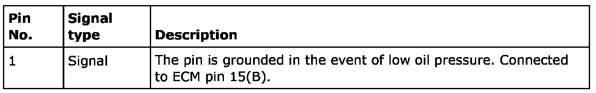
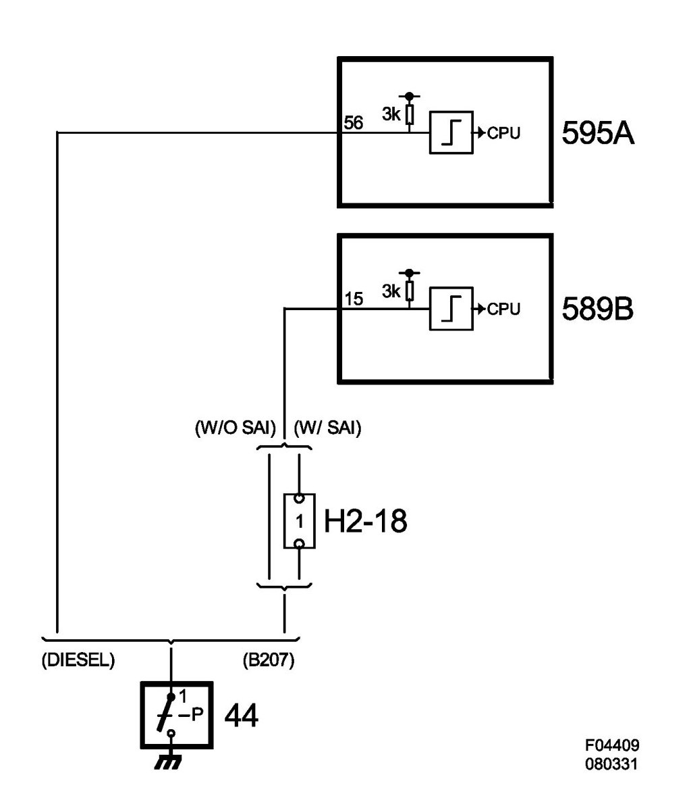

Engine Oil Pressure Switch (44), T8
Engine Oil Pressure Switch (44), T8
Location
Engine oil pressure switch (44)
Main task
Pressure switch with closing function in the event of loss of oil pressure. Also known as an On-Off switch. In the event of loss of oil pressure, the switch closes, grounding ECM, which in turn sends the bus message "No oil pressure" to MIU and SID.
Type
On-Off switch that grounds the connection to ECM if there is no oil pressure.

Connection

